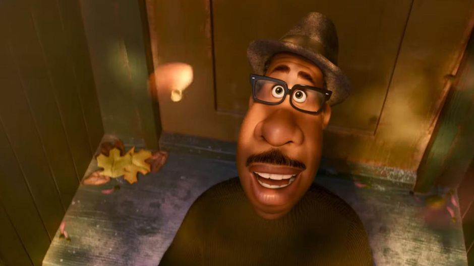
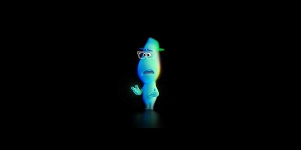
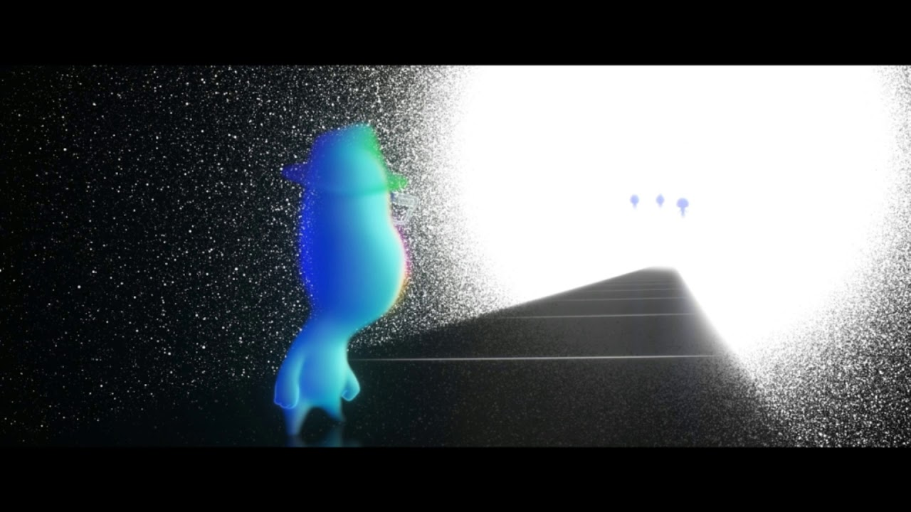
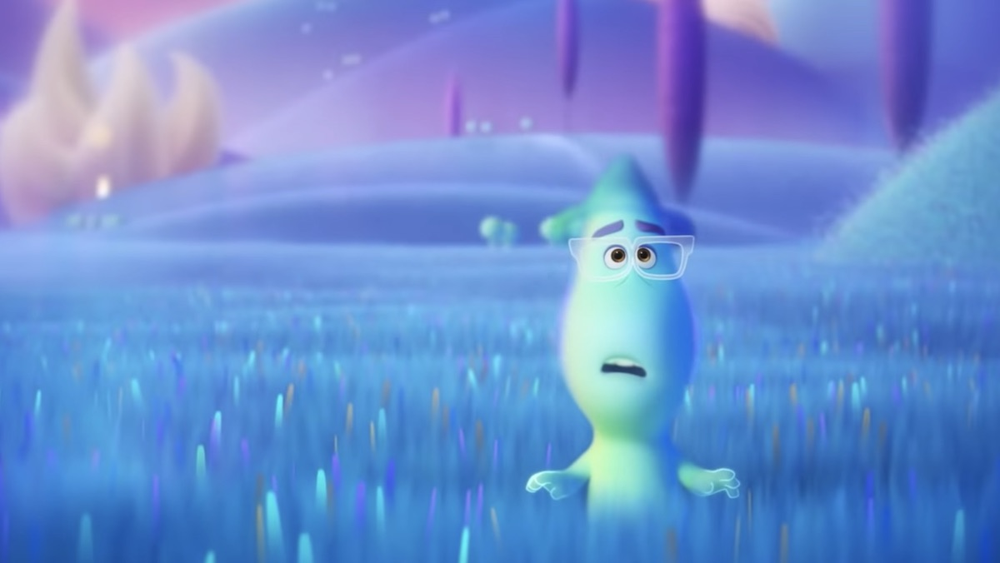
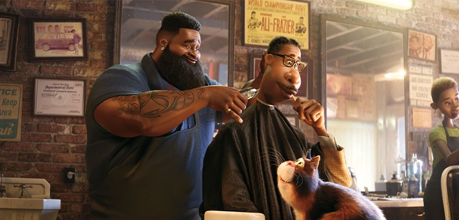
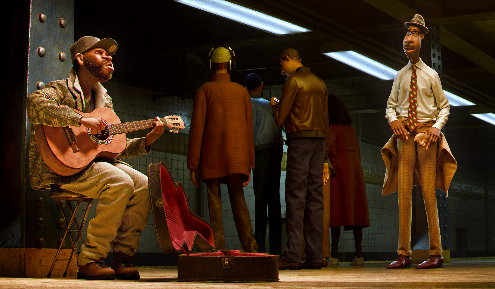
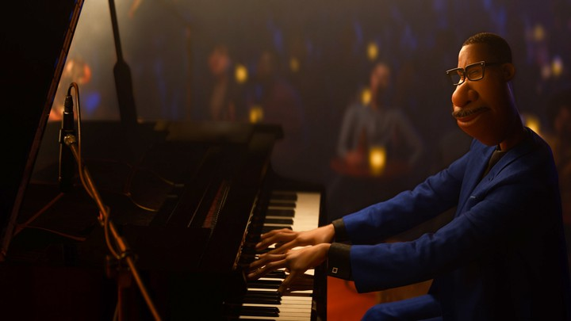
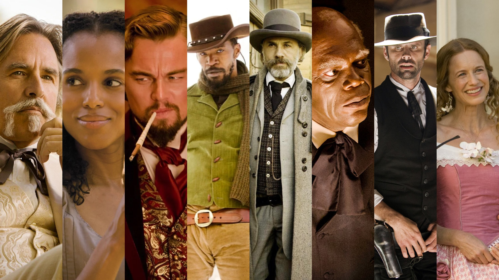

This sandwich is actually AMAZING. So far, it's better than all my custom sandwiches and the California Connection. The melt of cheese on the creamy chicken and mushroom mix with the sweetness of the aromatic onion. Mayo spices up the assortment of flavors, swirling them into one smooth, fantastical blend. As I eat it, I hear squishes of the portebello pushing against the Cheddar as the bread crunches. Wiping my mouth with a napkin and taking a swig of apple juice, I can conclude that this is a top-tier meal.
[Movie] Soul: Worthiness to Live: 12/31/20
I heard, before watching it, that Soul was a beautifully animated movie with a beautiful message. After watching, I completely agree. The portrayal of the first black lead in Pixar's history, was accurate and didn't perpetuate any harmful stereotypes. Every character was distinct and had a certain kind of innate style. I will talk more about these characteristics after the summary of the film.
The main character, Joe Gardner, is a middle school band teacher who is unsatisfied with his current occupation. The opening music being played by his band is discordant and off tune, Gardner's uneasy grin showing how he is losing hope in the children. The students are not paying attention. Some are sleeping, some are blowing spitballs, some are just not playing altogether. The principal notifies him that he is now a full-time band teacher, being promoted from only part-time. The bell rings, Joe leaves the building and heads to his mother Libba's clothing store. His mother knows that Joe wants to perform as a soul musician, just like her husband, Ray Gardner. However, that job is not financially secure, as there is a lot of travel and variable expenses. By chance, his former student Curley informs him of an opening in the band of jazz legend Dorothea Williams. Joe impresses Dorothea with his piano playing and is offered the job on the spot. As Joe goes home to celebrate and prepare, he falls in a manhole.

Joe is now on a metallic, black escalator with thin, white lights as step indicators. All around the escalator is the void. This version of Joe is entirely in a shade of fuzzy light blue, still keeping his hat, his rectangular glasses and his pear-shaped visage. His cheeks glow with lighter shades of orange and yellow, while the tips of his hat and hands are lined with a bluish green.

He sees other blobs just like him, except they look hopeful, excited even. Joe pans his gaze to what they are looking at, seeing a white hole sucking in all the void. Families and couples jump into the hole, disappearing forever. Joe realizes that this is the bridge between life and death.

Naturally, Joe doesn't want to die. He has a performance with Dorothea Williams, the biggest event of his life. He runs down the escalator, shoving aside an ever growing crowd of people. He missteps, and falls into the void.

Joe falls into a place called the Great Before, where souls live and find their spark before they are born onto the Earth. Soul counselors - all called "Jerry" - rush around. Joe is assigned as a instructor, a helper to a soul that tries to find their spark - their passion (or so it seems). He ends up with soul 22, one of the oldest souls still at the Great Before. She sees no point of living on Earth. Joe tries the Hall of Everything and tries showing 22 his own passions, but nothing seems to work. 22 takes Joe to the Zone, a place that people enter when their passion sets them into a euphoric trance; it also houses the lost souls who become obsessed.
Just when 22 and Joe were about to get eaten by a lost soul, a pastel pink pirate ship floats over. Moonwind, the captain of the ship, lassos the lost soul with the anchor. He performs a spell, releasing the lost soul back into the real world. Joe explains to Moonwind that he needs to return to Earth, and he agrees to help Joe return to his body. They learn that Joe has been in a coma since his fall. Joe excitedly hops back to Earth but accidentally brings 22 with him, resulting in 22 entering his body and Joe ending up in the body of a therapy cat. Terry, the accountant at the Great Beyond, notices that a soul is missing and goes to chase after Joe.

22 and Joe escape the hospital. After Cat Joe hands over a slice of pizza, 22 is captivated by the taste. They head to Joe's apartment where Cat Joe planned to give himself a haircut. Cat Joe accidentally slides forward, creating a nasty gap in Joe 22’s hair. Grudgingly, they next go to get a haircut where Joe 22 holds a deep, poignant conversation with Dez, the barber. Leaving the barbershop, the duo goes to see Libba to have it fixed. "Joe" reconciles with his mother, who finally accepts Joe's passion for music and offers him his father's old, blue suit.
Before Moonwind could swap Joe into his normal body, 22 experiences an epiphany and decides she has to find her purpose on earth. Joe the Cat chases after 22 Joe, but are both taken into the Great Before when Terry traps them. Joe is astonished to find that 22 has had her spark completed: she is now ready to live on Earth. However, Joe insists that the badge came from his experiences and tastes. Angry, 22 tosses the badge at Joe and disappears into the zone. Joe realizes from a Jerry that a spark isn't one's purpose, but instead one's readiness to live. He heads back to Earth and has a successful first performance with the Dorothea quartet. The experience, however, does not turn out as fulfilling as Joe expected it to be. Realizing his senseless and selfish ways with 22, he decides to go back to help her.
Joe plays the piano to return to the zone. He runs after 22, now a lost soul, to attempt to convince her that she is ready to live. He hands to her a small leaf that she kept while she was in Joe's body. With that, 22 finally enters Earth. Joe returns to the Great Beyond, ready for it to be over. At last second, two Jerrys showed their gratitude to Joe for helping 22 find her spark, allowing him another chance to live. Joe thanks them and returns to his body back on Earth, now with the intent to live his life to the fullest.

This movie resonates with me for two main reasons: the graphics and the message. The lighting is simply amazing: faces are brightly illuminated, shadows and light work together to create stunning scenes. Textures are very well rendered and everything looks and feels polished and soft. Second, I believe the most pivotal point in the story is when Joe realizes the true meaning of a spark. It doesn't matter what you're passionate in, it only matters that you love to do what you do and you're ready to savor the time you have on Earth.

[Movie] Django Unchained: A Revised Version of a Classic: 12/31/20
This movie was my first Western. Going in, I had no other knowledge of the film other than that it had a very good IMDB score. The movie starts with a traveller riding in a carriage approaching two slaver brothers driving a group of slaves. The traveller introduces himself as Dr. King Schultz, a dentist and a secret bounty hunter. He requests to buy Django and when the brothers refuse, he pulls out a shotgun and shoots two men dead. Then, he explains to Django that he needs someone that can recognize the Brittle brothers. Dr. Schultz is looking to kill the Brittle brothers for a bounty. Django informs him that they were his previous owners, and the duo ride off to visit all plantations in the South until they find the brothers.
Continuing, Dr. Schultz promises Django his freedom and $75 if he spots the Brittle Brothers. Django accepts the offer. Along the journey, it is revealed that Django had a wife before he was sold and separated. Her name was Broomhilda von Shaft, fluent in German. They find the Brittle Brothers at Spencer Bennett's plantation, Django shooting 1 of them and whipping the other one the same way the brother whipped Broomhilda. Dr. Schultz comes back and takes out the final brother with a rifle. They apologize to Mr. Bennett, explain the situation, and leave.
Schultz pitches a deal to Django, realizing they work well together: Django can get 1/3 of the bounty if they hunt as a team in the winter. They learn that Broomhilda is now on a plantation in Mississippi, owned by Calvin Candie (Leo!) in Candyland. Calvin Candie makes his slaves fight in Mandingo fights, where they have to kill or severely injure the other fighter. On the way, Django claims his first bounty, keeping the handbill as a memento. Dr. Schultz and Django plan to disguise themselves as expert Mandingo trainers looking to buy an expensive fighter to win at tournaments, when they are really looking for Broomhilda.
Arriving at the plantation, Schultz informs Broomhilda of their plan secretly, in German. Calvin's staunchly loyal head house slave Stephen realizes that Broomhilda knows Django, accurately deduces their plan and alerts Calvin. Candie realizes and holds Django and Schultz at gunpoint, offering Broomhilda for 12,000 instead of the fighter. Schultz reluctantly agrees. During the sale's finalization, Calvin threatens to have Broomhilda shot if Schultz does not shake his hand to seal the deal, and Schultz instead shoots him dead. Candie's butler shoots Schultz dead, leaving Django to kill the butler, the gunners and Candie's lawyer. After getting too high of a K/D, he surrenders after Stephen takes Broomhilda hostage.
Stephen informs the imprisoned Django that he has been assigned to go to a mining company and worked to death. En route there, Django uses his first handbill to prove to his escorts that he is a bounty hunter. He claims the men on the handbill are at Candyland and promises the escorts all but $500 of the reward money. Then, the escort have the great idea of letting Django help them and gives him the gun. He naturally shoots the escorts with the gun and gathers sticks of dynamite from the escort's horse. After arriving back to the mansion, Django kills Lara (Calvin's sister) and the remaining Candyland henchmen, shooting Stephen in both kneecaps and blowing up the whole house with dynamite as him and Broomhilda ride off into the distance.
After watching, I realized that this movie had incorporated a multitude of Western elements without making them in-your-face. For example, there isn't a scene without a horse and the arid landscape is constantly displayed behind them. There is a healthy amount of gunfights with plenty of action scenes. Together with the charisma of Dr. Schultz and the eloquent, sharpshooter Django, this movie is an enjoyable experience.

From left to right: Bennett, Broomhilda, Candie, Django, Schultz, Stephen, Billy Crash (henchman), Lara.